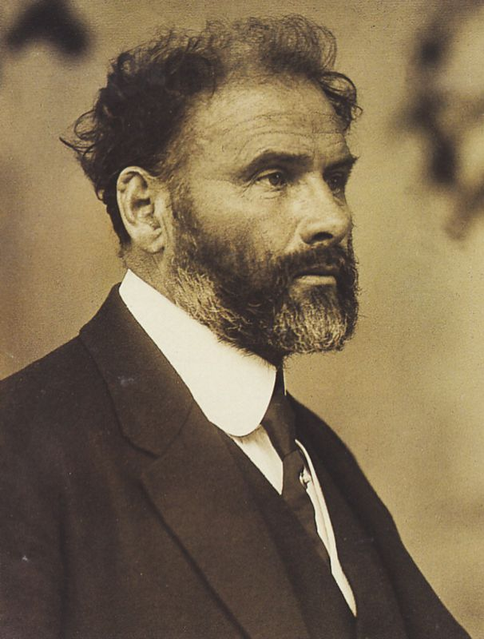
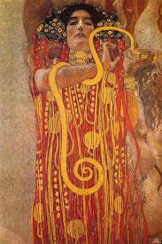
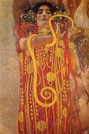
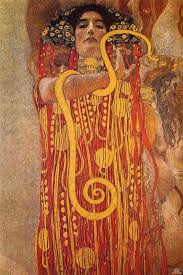

Gustav Klimt
Gustav Klimt nacque a Vienna il 14 luglio 1862. Studiò alla Scuola di Arti Applicate. Iniziò adolescente l’attività di pittore e decoratore di importanti edifici viennesi, insieme al fratello Ernst e ad altri artisti. Diventò in breve il più impegnato esponente della Secessione viennese, la scuola austriaca dell’Art Nouveau. Nel 1905 uscì dalla Secessione e iniziò la propria attività nel settore dell’arte decorativa.



 

